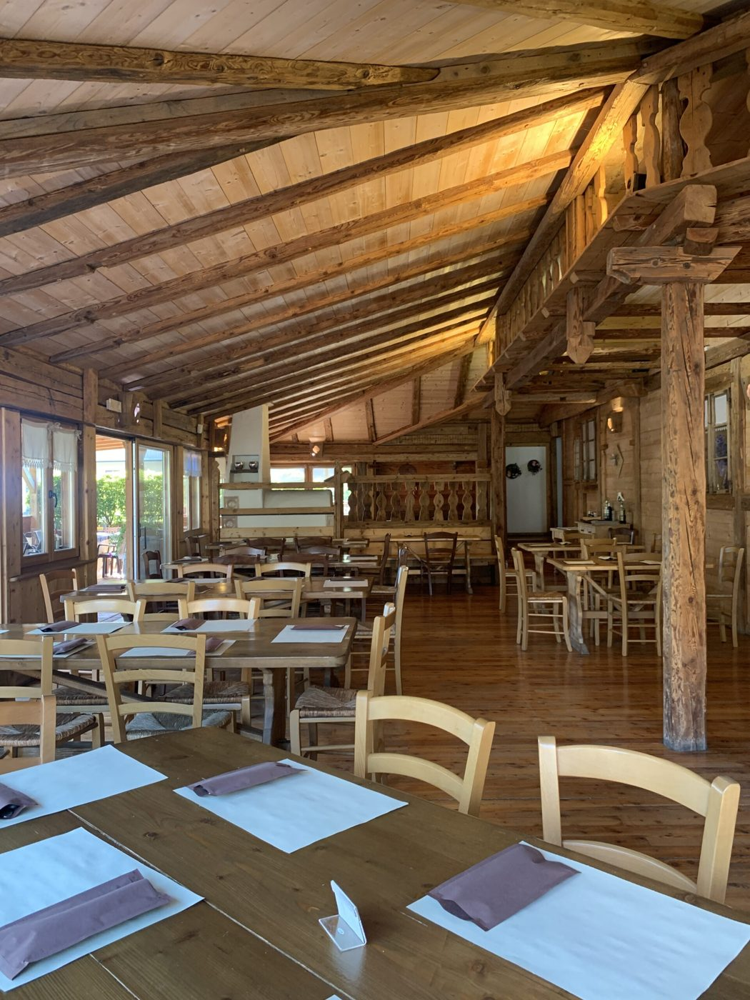

Chi siamo
Una pizzeria che sa di casa, nel cuore della Valsugana.
El Filò nasce a Levico Terme con un'idea semplice: una pizzeria che sappia di casa. Il nome viene da un'antica tradizione trentina — il filò, il ritrovo serale attorno al fuoco a raccontarsi storie nelle lunghe sere d'inverno.
Da noi quel fuoco è il forno a legna, e il locale è tutto in legno: travi a vista, pavimento caldo, tavoli grandi da condividere. Impasto lavorato con calma e lunga lievitazione, per una pizza più leggera e digeribile. Ingredienti scelti, tanti del territorio.
Perché per noi una pizzeria è prima di tutto un posto dove ritrovarsi.
Scopri il menù